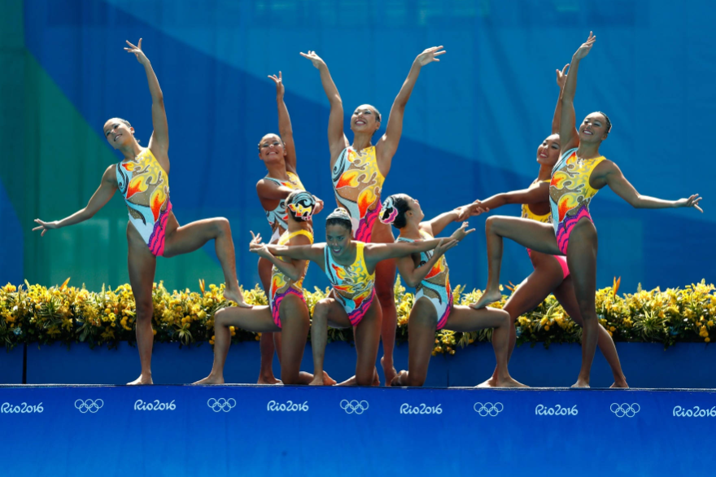
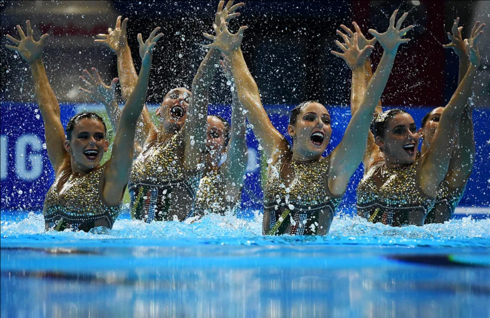
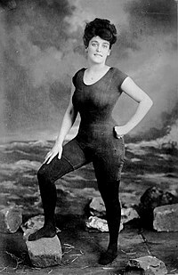

Nado artístico é um esporte em que os atletas realizam acrobacias dentro ou fora de uma piscina, foi até 2017 chamado de nado sincronizado, antes de ser renomeado pela federação internacional do esporte, a FINA. É uma modalidade esportiva que combina esportes como natação, ginástica, dança e balé, os atletas combinam alta capacidade pulmonar e força física, com a elegância dos elementos de ginástica e da dança. O nado artístico terá participação masculina pela primeira vez em Paris 2024. Seus praticantes fazem acrobacias em sincronia com uma música ao fundo.


História
Com origem na Europa do século XIX, o nado artístico incialmente era praticado por homens e chamado de balé aquático. Uma das primeiras competições da modalidade aconteceu em 1891, na Alemanha. Foi somente na década de 1920 que o esporte tornou-se popular entre as mulheres, principalmente após a paresentação de Annette kellerman, em 1907, nos Estados Unidos, sendo o primeiro grande nome do nado artístico. Em 1933, começou a ser chamado de nado sincronizado, estreando nas olimpíadas no ano de 1948, mas apenas como esporte de exibição, sem recebimento de medalhas. Viria a ser modalidade olímpica apenas em 1984.

Annette Kellerman, primeiro grande nome do nado artístico
Aqui no Brasil, o nado artístico chegou entre os anos de 1960 e 1970 através de imigrantes europeus, ganhando popularidade a partir de 1980.
Regras Básicas
A piscina deve ter 3 metros de profundidade, cm dimensões de 30m por 20m
São avaliados a execução, impressão artística, sincronização e a dificuldade das coreografias
As equipes são compostas por nove atletas
As provas da etapa preliminar são organizadas em duas apresentações diferentes: a rotina técnica e a rotina livre. Na etapa final da competição, as atletas devem apresentar apenas uma rotina livre. Na competição em equipe também é inclusa uma prova acrobática.
Perdem pontos os atletas que tocarem o fundo da piscina, quando não apresentam um elemento obrigatório ou demoram na apresentação fora d'água
Paises relevantes para o esporte
Alemanha: Local de nascimento do nado artístico
Rússia: Maior campeã na modalidade
Estados Unidos: Destaque no quadro de medalhas
Canadá: Destaque no quadro de medalhas
China: Promessa de maior medalhista para Paris 2024, na modalidade
Campeões
Nome/País
Ano
Local da Competição
Rússia
2020
Tóquio
Rússia
2016
Rio de Janeiro
Rússia
2012
Londres
Rússia
2000
Sydney
EUA
1996
Atlanta
EUA
1992
Barcelona
Canadá
1988
Seul
Melhor do mundo
O maior nome do nado artístico no mundo, até hoje, é a atriz e nadadora Esther Williams(8 de agosto de 1921 - 6 de junho de 2013),
nascida nos Estados Unidos. Considerada musa e símbolo do esporte, Williams foi tricampeã de natação e participou de vários musicais entre os anos 1940 e 1950.